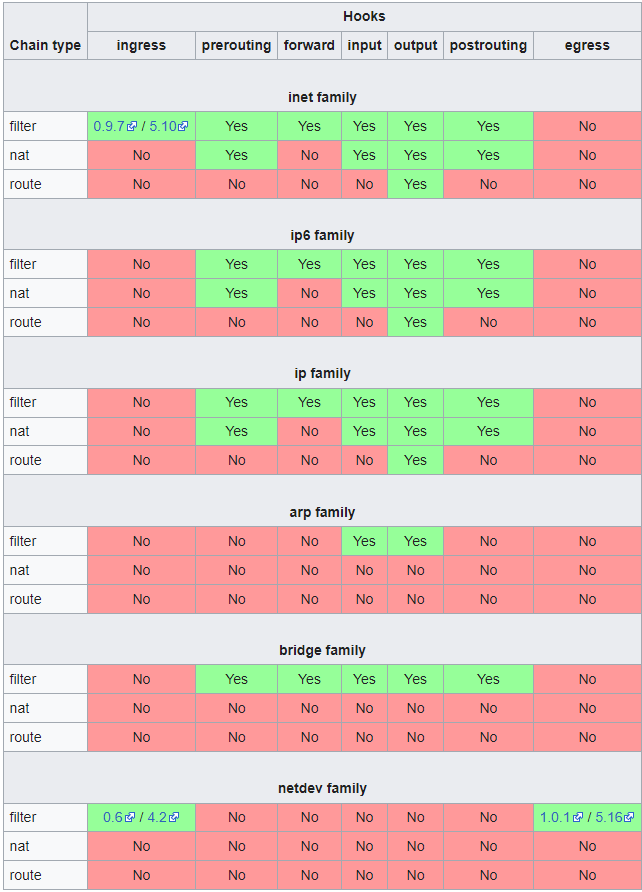

nftables 使用教程
新版本的 openwrt 使用 fw4 防火墙，默认已经从 iptables 切换到了 nftables，语法有了很大的变化，下面介绍 nftables 的使用方法。
路由表配置
路由表是 nftables 中最顶层的容器，它管理着 chains, sets, maps, flowtables, 和 stateful objects.
family 集合
每个路由表都只能属于一个 family 集合，可用的 family 有：
- ip 监听 ipv4 的流量
- ip6 监听 ipv6 的流量
- inet 同时监听 ipv4 和 ipv6 的流量
- arp 监听 ARP-level 地址解析协议的流量
- bridge 监听 bridge 桥接流量 如交换机
- netdev 用于监听某个单独网卡的流量
基本语法
新建路由表：
nft add table ip tabletest
以上命令在 ip 集合中新建一个名称为 tabletest 的路由表，可以处理 ipv4 流量
路由表列表：
# 列出所有路由表
nft list tables
# 列出所有 ip 集合的路由表
nft list tables ip删除一个路由表：
nft delete table ip tabletest
路由链配置
不同于 iptables，nftables 没有预定义的链，如 input output 等。想要在某个环节处理流量，需要定义一个自定义名称的基本链，然后将其挂载在一个特定的 netfilter hook 钩子上。下图是流量包在 linux 网络中的传输路径：
外部访问流量传输到本机后如果目标地址是本机，流量传输路径是 prerouting -> input hooks -> 本机，然后经过本机处理后流向 本机 -> output -> postrouting hooks。
如果传入本机的外部流量目标地址不是本机，则受 forward hook 监听，这类流量的传输路径是 prerouting -> forward -> postrouting。
本机访问外部地址的流量传输路径是 本机 -> output -> postrouting hooks。
注意如果本机作为 router 路由使用，需要提前开启 ip 转发功能：
echo 1 > /proc/sys/net/ipv4/ip_forward
以下是 netfilter 可用的 chains 和 hooks 列表：

基本语法
建立基本链，挂载在一个特定 type 的 netfilter hook：
nft add chain [<family>] <table_name> <chain_name> { type <type> hook <hook> priority <value> \; [policy <policy> \;] [comment \"text comment\" \;] }
注意，由于 nft 语法使用了特殊字符，如: ;，在命令行中执行需要加转义符 \。或者可以使用单引号 '` 将 nft 后的语句包起来，以下两种写法效果相同：
nft add chain ip tabletest input { type filter hook input priority 0 \; }
nft 'add chain ip tabletest input { type filter hook input priority 0 ; }'
另一种方法是运行 nft 在交互模式，执行以下命令后就可以不加转义符: nft -i。
上面的命令在 tebletest 路由表中新建一个 input 链，挂载在 filter 路由链的 input hook 上。这样就可以监听所有进入本地的流量。
priority 决定了所有链的顺序，例如在 filter input hook 上挂载了多个自定义链，通过 priority 决定其执行顺序。数值越低执行优先级越高，例如 -12, -1, 0, 10。如果给多个挂载在同一个 hook 上的自定义基本链同样的 priority，它们的先后执行顺序就是不确定的。
添加以下命令后就可以在 tabletest 基本链中监听本机输出的流量：
nft 'add chain ip tabletest output { type filter hook output priority 0 ; }'
如果不定义大括号中的内容，也就是不挂载在特定 hook 上，则路由链不会监听任何流量。
policy 定义了默认的策略，可用的默认策略为：accept 和 drop，如果路由链中的规则都没有匹配则会应用默认策略：
- accept 没有匹配到的流量继续在网络层传输
- drop 没有匹配到的流量被丢弃
type 指定自定义路由链挂载到那个基本 chain，可用的基本链：
- filter, 用于过滤流量包
- route, 用于重路由，等同于 iptables 的 mangle 路由链的 output hook (其他 mangle hooks 可以使用 filter 代替)
- nat, 用于运行 Networking Address Translation (NAT). 只有第一个 nat 流量包会匹配到此链剩余的包会跳过此链，因此尽量不要使用此链过滤流量
hook 定义了挂载的基本链 hook，可用的 hooks 如下：
- ingress 只能用于 netdev 和 inet family: 监听来自于 NIC driver 的流量, 早于 prerouting.
- prerouting: 监听所有在 routing 前的入口流量. 流量可能重定向到 local 或 remote systems.
- input: 监听所有被路由或重定向到 local system 的入口流量
- forward: 监听所有不被重定向到 local system 的入口流量
- output: 监听所有在 local machine 被管理的出口流量
- postrouting: 监听所有被路由后的即将离开 local system 的出口流量
列出一个路由表的所有路由链：
nft list ip table tabletest
列出一个路由表的指定路由链：
nft list chain ip tabletest output
comment 可以给规则添加注释：
nft add rule ip tabletest input counter comment \"test comment\"
基本规则配置
通过规则可以控制路由链上的流量。
基本语法
添加规则：
nft add rule ip tabletest output ip daddr 8.8.8.8 counter
以上命令会在 tabletest 路由表的 output 链中添加一条规则，匹配出口流量中 ip 地址为 8.8.8.8 的流量并对匹配次数计数，nftables 中 counter 会默认启用即使不写。以上命令相当于 iptables 中的 -A 命令。
列出某个链包含的规则：
root@OpenWrt:~# nft list chain ip tabletest output
table ip tabletest {
chain output {
type filter hook output priority filter; policy accept;
ip daddr 8.8.8.8 counter packets 0 bytes 0
}
}下面测试以上规则是否生效，执行以下命令：
ping -c 1 8.8.8.8再次查看此链的规则：
root@OpenWrt:~# nft list chain ip tabletest output
table ip tabletest {
chain output {
type filter hook output priority filter; policy accept;
ip daddr 8.8.8.8 counter packets 1 bytes 84
}
}可以看到已经有一次计数了。
指定位置添加规则：
nftables 中必须通过 handle num 编号来在指定位置添加规则，需要通过 -a 查看链中已经存在的规则的编号：
nft -n -a list table ip tabletest
-n 可以按数字顺序排号避免出现重复编号。再次查看链中的规则：
root@OpenWrt:~# nft -n -a list table ip tabletest
table ip tabletest { # handle 4
chain output { # handle 1
type filter hook output priority 0; policy accept;
ip daddr 8.8.8.8 counter packets 0 bytes 0 # handle 5
}
}handle 5 就是这条规则的编号。
下面我们通过 handle 索引在这条规则后添加一条新规则：
nft add rule ip tabletest output position 5 ip daddr 127.0.0.8 drop
查看链中的规则：
root@OpenWrt:~# nft -n -a list table ip tabletest
table ip tabletest { # handle 4
chain output { # handle 1
type filter hook output priority 0; policy accept;
ip daddr 8.8.8.8 counter packets 0 bytes 0 # handle 5
ip daddr 127.0.0.8 drop # handle 6
}
}如果要在某条规则前插入一条规则需要使用 insert 指令：
nft insert rule ip tabletest output position 5 ip daddr 127.1.1.8 drop
查看效果：
root@OpenWrt:~# nft -n -a list table ip tabletest
table ip tabletest { # handle 4
chain output { # handle 1
type filter hook output priority 0; policy accept;
ip daddr 127.1.1.8 drop # handle 7
ip daddr 8.8.8.8 counter packets 0 bytes 0 # handle 5
ip daddr 127.0.0.8 drop # handle 6
}
}在某条链最前面添加一条规则：
nft insert rule ip tabletest output ip daddr 192.168.2.1 counter
在最前面添加规则就不需要指定 handle 了。
替换某条规则：
替换一条规则也需要 handle 编号。下面示例会替换 handle 5 为新的规则：
nft replace rule ip tabletest output handle 5 ip daddr 1.1.1.1
删除规则：
同样的，删除某一条规则也需要获取这条规则的 handle 编号。
删除 tabletest 链的 handle 7 规则：
nft delete rule ip tabletest output handle 7
删除链中所有规则：
nft flush chain ip tabletest output
删除路由表中所有链的所有规则：
nft flush table ip tabletest
ruleset 层级的操作
显示所有 family 的所有 rule 规则：
nft list ruleset
显示某一个集合的所有 rule：
% nft list ruleset arp
% nft list ruleset ip
% nft list ruleset ip6
% nft list ruleset bridge
% nft list ruleset inet清除所有集合的所有规则：
nft flush ruleset
清除某一个集合的所有规则：
% nft flush ruleset arp
% nft flush ruleset ip
% nft flush ruleset ip6
% nft flush ruleset bridge
% nft flush ruleset inet备份规则到文件：
# 备份所有集合的所有规则
nft list ruleset >> backup.nft
# 备份 ip 集合的所有规则
nft list ruleset ip >> backup.nft从文件恢复规则：
nft -f backup.nft
以 json 格式显示所有规则：
nft --json list ruleset
流量元信息匹配
通过 meta 选择器可以进行流量匹配或流量设置。下面简单介绍几个常用的匹配模式，更加详细的参考官方资料：https://wiki.nftables.org/wiki-nftables/index.php/Matching_packet_metainformation
iifname 匹配网卡名称：
# lo 网卡的入口流量会被接收
nft add rule tabletest input meta iifname lo acceptmark 匹配流量标记：
# 流量标记为 123 的出口流量计数
nft add rule tabletest output meta mark 123 counterskgid 匹配流量由特定 gid 用户产生的数据：
# 匹配来自 gid 用户 1000 的流量
nft add rule tabletest output meta skgid 1000 counter流量头信息匹配
通过 ip {saddr | daddr} 可以匹配 ipv4 的源流量或目标流量：
# 匹配来自 192.168.1.100 且去往 192.168.1.1 的流量并计数
# 注意本机地址必须为 192.168.1.1 才可以由 input hook 截获
nft add rule ip tabletest input ip saddr 192.168.1.100 ip daddr 192.168.1.1 counter通过 icmp type 关键词来匹配 icmp 流量，如 ping request：
nft add rule ip tabletest input icmp type echo-request counter drop
可以通过命令查询所有可用的 icmp type 类型：
root@OpenWrt:~# nft describe icmp type
payload expression, datatype icmp_type (ICMP type) (basetype integer), 8 bits
pre-defined symbolic constants (in decimal):
echo-reply 0
destination-unreachable 3
source-quench 4
redirect 5
echo-request 8
router-advertisement 9
router-solicitation 10
time-exceeded 11
parameter-problem 12
timestamp-request 13
timestamp-reply 14
info-request 15
info-reply 16
address-mask-request 17
address-mask-reply 18通过 ip protocol 匹配 ip family 任意类型的协议：
# 匹配所有 tcp 流量
nft add rule ip tabletest output ip protocol tcp
# 匹配所有 tcp udp 流量
nft add rule ip tabletest output ip protocol { tcp, udp }通过 meta l4proto 匹配 inet family 任意类型的协议：
# tabletest 需要定义为 inet 集合
nft add rule inet tabletest output meta l4proto tcp匹配特定端口的流量：
# 丢弃所有端口为 1-1024 的 tcp 流量访问本机
nft add rule ip tabletest input tcp dport 1-1024 counter drop流量匹配动作
accept 和 drop
drop 可以对匹配的流量直接丢弃，注意 drop 不能和其他动作组合使用：
nft add rule ip tabletest input ip protocol udp drop
accept 可以对匹配的流量接收，可以和其他动作组合使用 如 counter 计数：
nft add rule ip tabletest input counter accept
reject 流量
不同于 drop，reject 可以在拒绝流量的基础上进行很多其他动作，如返回给源请求地址无法访问的原因等。如果不指定其他动作，默认会返回源地址一个 ICMP/ICMPv6 port unreachable 的流量包。
示例如下：
# 拒绝所有 input 的 udp 流量
nft add rule ip tabletest input ip protocol udp reject
# 拒绝指定流量并返回 icmp host-unreachable
nft add rule ip tabletest input reject with icmp type host-unreachableicmp 可用如下原因：
net-unreachable: Destination network unreachable
host-unreachable: Destination host unreachable
prot-unreachable: Destination protocol unreachable
port-unreachable: Destination port unreachable (this is the default)
net-prohibited: Network administratively prohibited
host-prohibited: Host administratively prohibited
admin-prohibited: Communication administratively prohibitedjump 跳转到其他 chain
注意只能跳转到同一个路由表的其他 chain。
首先我们新建一个 chain：
nft add chain ip tabletest tcp-chain
然后定义这个链的规则：
nft add rule ip tabletest tcp-chain counter
然后可以定义将所有匹配的流量跳转过去：
ft add rule ip tabletest input ip protocol tcp jump tcp-chain
以上示例实现的就是将所有 input 的 tcp 流量跳转到 tcp-chain 计数，然后就返回原始 input 环节继续流转。
log 日志
通过 log 可以记录匹配到的流量信息，在系统日志中可以查看到。
下面是一个示例，可以记录所有对本机的 ping 请求：
nft add rule ip tabletest input icmp type echo-request log prefix \"New ping request: \" accept从局域网对本机进行 ping 后，系统日志如下：
Thu May 9 11:58:04 2024 kern.warn kernel: [ 3741.786865] New ping request: IN=br-lan OUT= MAC=00:0c:29:c5:39:8d:00:50:56:c0:00:02:08:00 SRC=192.168.244.2 DST=192.168.244.1 LEN=60 TOS=0x00 PREC=0x00 TTL=128 ID=49655 PROTO=ICMP TYPE=8 CODE=0 ID=1 SEQ=6609网络地址转换
nat 链类型可以执行网络地址转换的功能，这种链类型有其特有的属性：
- 流量中只有第一个包会被用来进行匹配规则
- 流量包中后续的流量不会被检查
- nat 链类型特有的规则赋予其他链类型会报错
先定义一个 nat 类型的基本链：
nft add chain ip tabletest postrouting { type nat hook postrouting priority 0 \; }
以上定义了一个 nat 类型的基本链挂载在 postrouting hook 上。
snat 表示源地址。
下面的规则可以将来自 192.168.1.0/24 从 eth0 网卡发出的流量在发送出去的时候，将源地址修改为 1.2.3.4
nft add rule ip tabletest postrouting ip saddr 192.168.1.0/24 oif eth0 snat to 1.2.3.4
也可以定义一个地址范围：
# 将所有 tcp 流量的源地址都修改为指定的ip范围内
nft add rule ip tabletest postrouting ip protocol tcp snat ip to 10.0.0.1-10.0.0.100:3000-4000下面介绍如何修改目标地址，再定义一个 nat 类型的基本链：
nft add chain ip tabletest prerouting { type nat hook prerouting priority 0 \; }
以上定义了一个 nat 类型的基本链挂载在 prerouting hook 上。
dnat 表示目标地址。
下面规则会将要进入 eth0 的 tcp 80 443 端口的流量的目标地址改为 192.168.1.120 也就是重定向：
nft 'add rule ip tabletest prerouting iif eth0 tcp dport { 80, 443 } dnat to 192.168.1.120'
redirect 是一种特殊的 dnat，它会将流量重定向到本机设备上：
nft add rule ip tabletest prerouting tcp dport 22 redirect to 2222
以上规则会将进入的 tcp 22 端口的流量转发到本机 2222端口上。
需要注意的是 redirect 只能应用于 nat 链类型的 prerouting 和 output hooks。
设置流量包元信息
设置 mark 标记：
nft add rule ip tabletest output mark set 123
set 架构
nftables 提供了 set 架构可以用任意支持的选择器来搭建 sets。
匿名 set
匿名 set 是直接定义在 rule 内的 set，它没有特定的名称，也不可以更新 set 中的元素，下面是一个示例：
nft add rule ip tabletest output tcp dport { 22, 23 } counter
{ 22, 23 } 就属于一个匿名 set。规则会去尝试匹配 set 中的每个元素。
非匿名 set
可以通过 nft add set 来创建一个有名称的 set，例如：
nft add set ip tabletest blackhole { type ipv4_addr \; comment \"drop all packets from these hosts\" \; }
blackhole 就是这个 set 的名称，后续可以再 rule 中使用。set 类型指定是 ipv4 数据。set 名称需要小于等于16个字符，comment 注释是可选项。
可用的 type 类型有：
ipv4_addr: IPv4 address
ipv6_addr: IPv6 address.
ether_addr: Ethernet address.
inet_proto: Inet protocol type.
inet_service: Internet service (read tcp port for example)
mark: Mark type.
ifname: Network interface name (eth0, eth1..)
建立好之后就可以往 set 里添加元素了：
nft add element ip tabletest blackhole { 192.168.3.4 }
nft add element ip tabletest blackhole { 192.168.1.4, 192.168.1.5 }如果要添加一个 ip 网段则需要将 set 定义 flags interval：
nft add set ip tabletest blackhole { type ipv4_addr \; flags interval \; }
然后就可以添加一个 ip 网段了：
nft add element ip tabletest blackhole { 192.168.1.0/24 }
可以查询 set 中现有的元素：
root@OpenWrt:~# nft list set ip tabletest blackhole
table ip tabletest {
set blackhole {
type ipv4_addr
comment "drop all packets from these hosts"
elements = { 192.168.1.4, 192.168.1.5,
192.168.3.4 }
}
}下面就可以通过 set 名称在 nftables 规则中应用：
nft add rule ip tabletest input ip saddr @blackhole drop
nft add rule ip tabletest output ip daddr != @blackhole accept以上就是 natables 的基本用法。
参考链接
nftables HOWTO documentation page
Nftables families
Netfilter hooks
Operations at ruleset level
标签：无